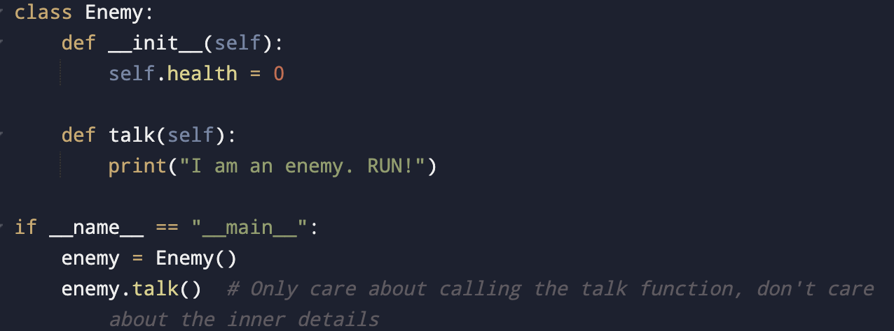
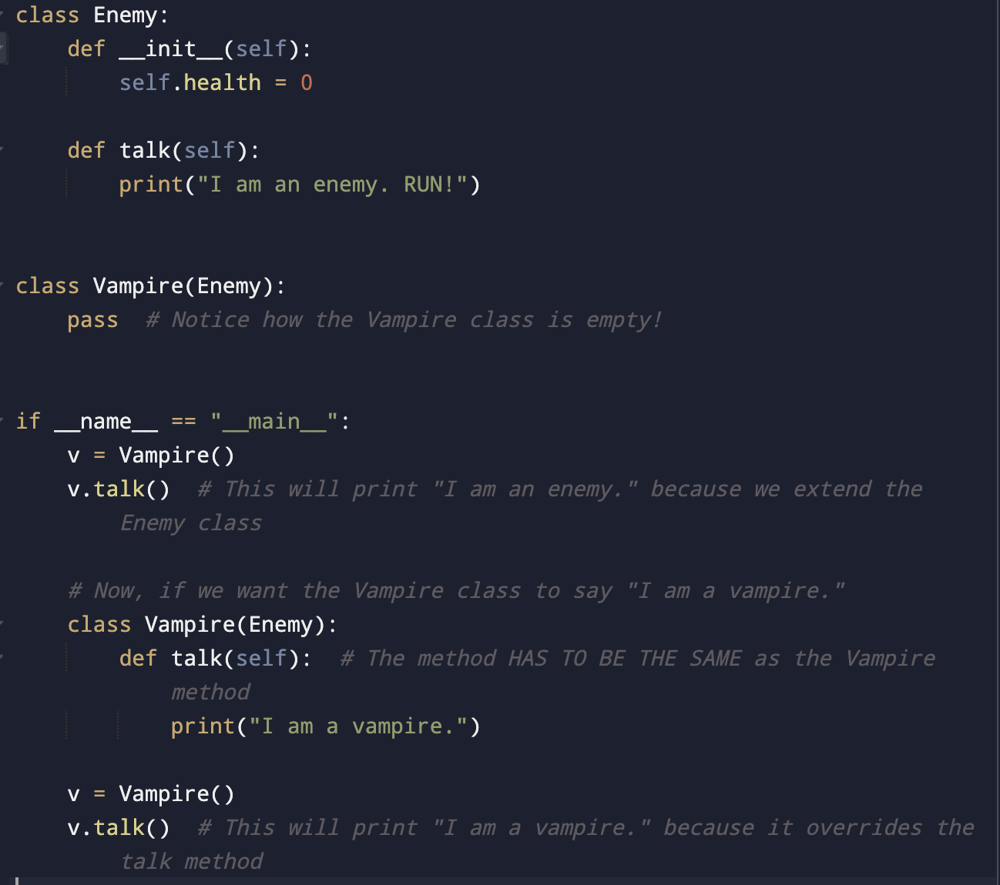
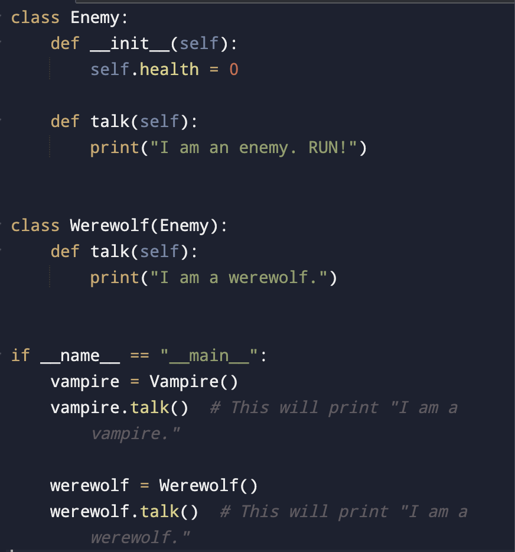
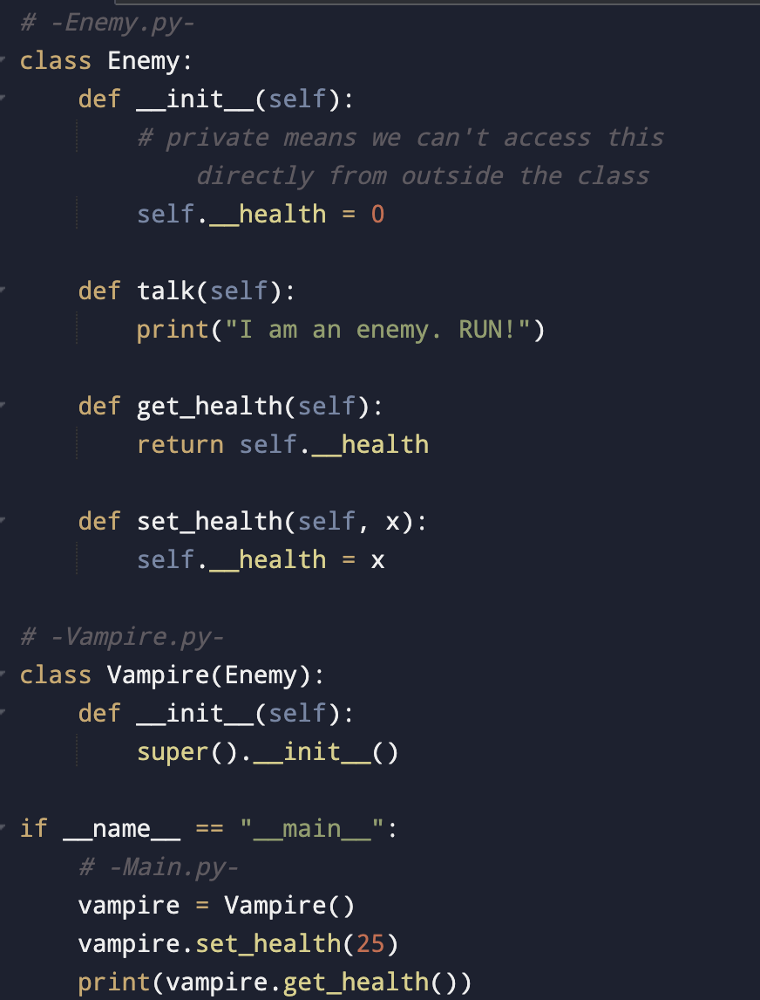

Object Oriented Programming
Welcome to the world of Object Oriented Programming (OOP). OOP is a programming paradigm that uses objects to organize code. Let's explore some basic concepts:
- Class: A blueprint for creating objects. It is a blueprint of an object. You need to have a class before you can create an object.
- Object: An instance of a class, encapsulating data and behavior. Objects have properties and methods.
- Method: A method is a procedure associated with a class and defines the behavior of the objects that are created from the class. It is an action performed on objects: walking, driving properties: attributes of method: color, size, etc
Explain to me what OOP is: essentially it takes real world objects and represent them in code
Abstraction in Programming
Meaning/Benefit:
Only show the necessary details to the user of the object. Only exposing the necessary details needed by whomever is using the object.
- Increases Security: Only important details are provided to the user.
- Reduces Code Size: Not showing unnecessary code, you can just call on the function.
- Makes Code Readable: Makes code simpler to understand.
Example:
When the user is turning on/off the monitor, they don’t care much about the inner mechanisms that occur, they just want to push a button and see the computer turn on/off.
Coding Example:
Inheritance in Programming
Meaning/Benefit:
- Allows code reusability.
- Useful when you have an existing class and want to build a new class that uses functionalities from the previous class and adds additional features.
- Classes derived from an existing class are called subclass, extended class, or child class.
- The subclass is derived from either the superclass, parent class, or the base class.
Example:
So right now, we just have an enemy class. Now, say we want to make a new class called Vampire.
Coding Example:
Polymorphism in Programming
Meaning/Benefits:
- Allows you to determine what kind of function to run while the program is running.
- Allows you to define methods in the child class that have the same name as the methods in the parent class.
- Code reusability: once written, classes can be reused.
Example:
Create a new class called WereWolf.
Coding Example:
Encapsulation in Programming
Meaning:
Built on the idea of data hiding. Encapsulation restricts access to certain properties or methods of our object to whatever is calling that object.
Example:
We can do this by setting the properties to private.
Coding Example:
Importance
These are the fundamental concepts of Object-Oriented Programming (OOP). By understanding and applying concepts like abstraction, inheritance, polymorphism, and encapsulation, developers can create well-structured and reusable code that models real-world entities effectively.